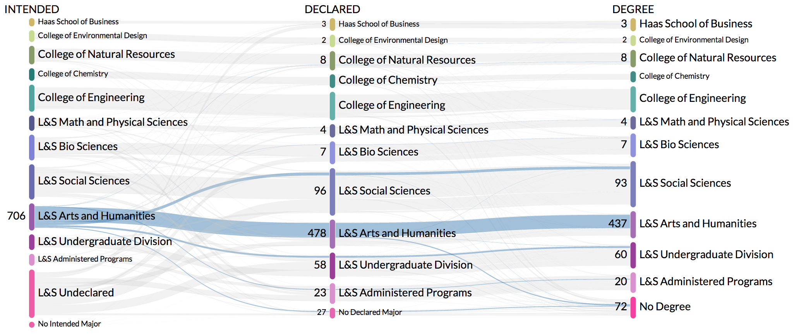
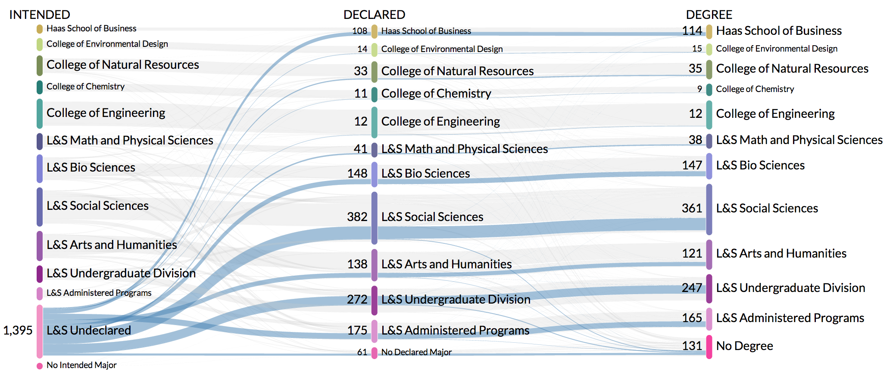
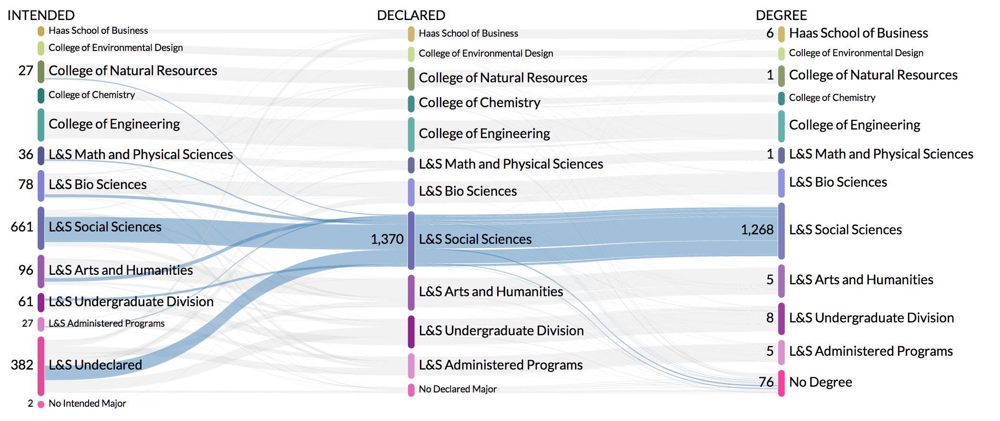
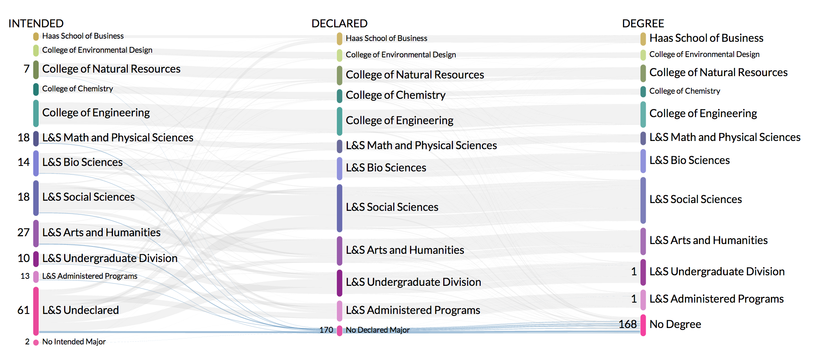
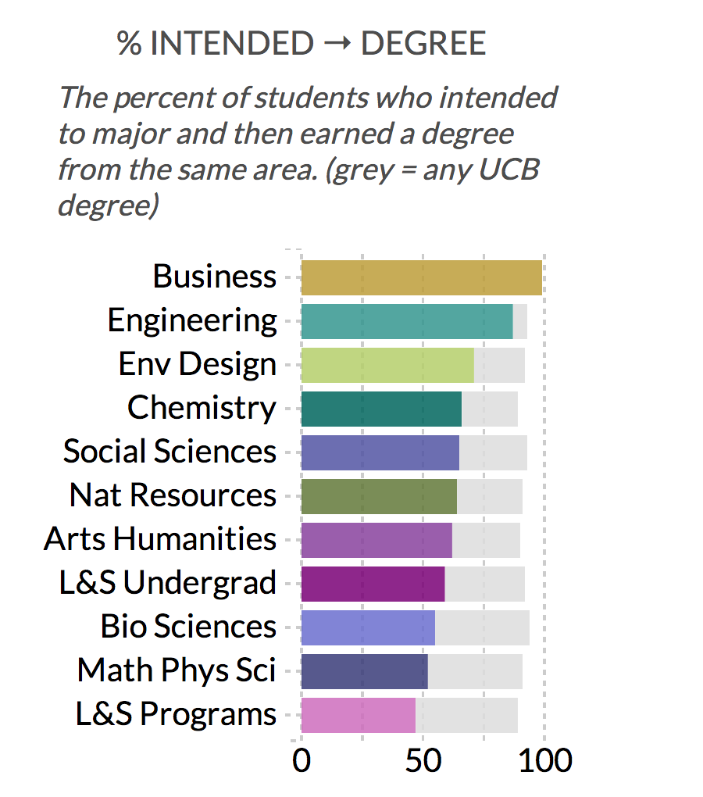
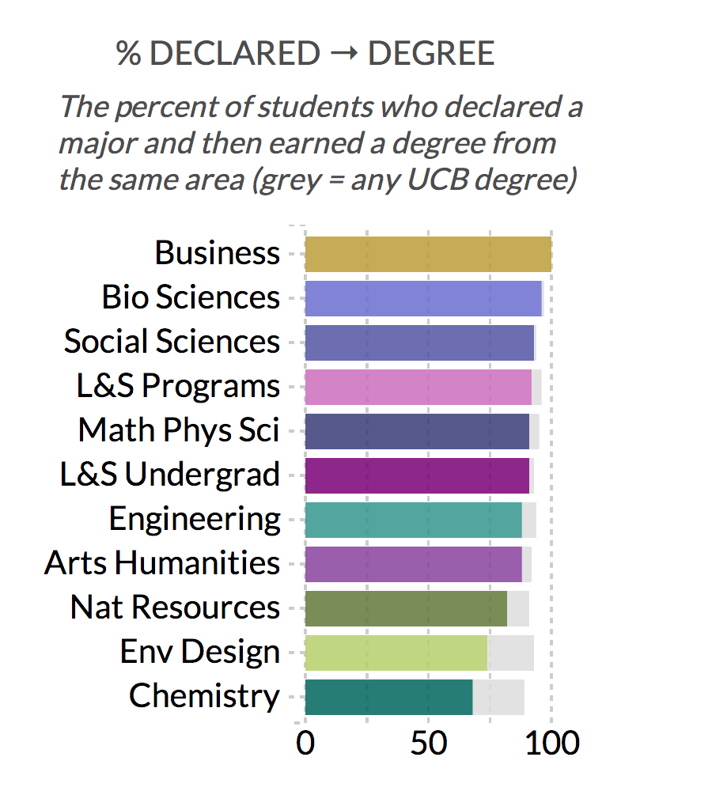
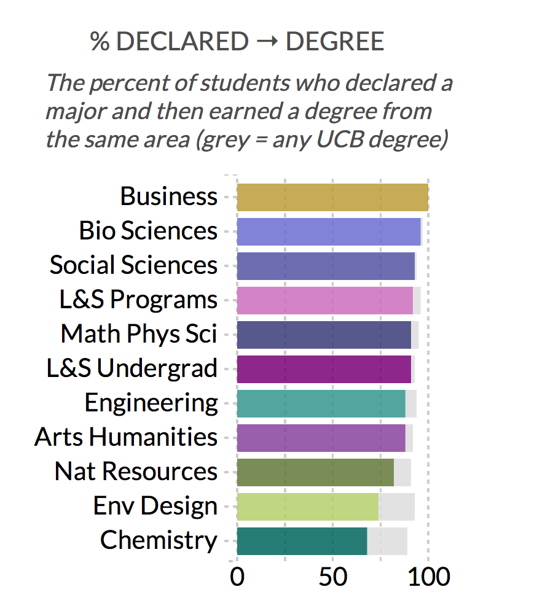

Undergraduate students come to Berkeley from a variety of paths, backgrounds, and experiences but they all share at least two things in common. All are part of the Berkeley community and all plan to earn their degree.
Once they arrive on campus, the question becomes
What next?
Some students come with intended majors while others are undeclared. In the mix of new courses, new peers, and a new environment, do students continue on their intended path? Do students graduate?
6,269 new students entered UC Berkeley.
Among them were
4,226 freshmen
2,037 transfers
(along with 6 students earning a 2nd bachelor’s degree)
Using colleges and divisions to track student interests, students can be followed from intended major to declared major to where they ultimately earn their degree. Earned degrees are as of the 2012-13 academic year.

The majority of students who identify an intended major end up declaring their major within the same division. For example, a student with an intended major of English will likely follow 66% of their fellow students with intended majors in L&S Arts & Humanities and also declare a major within Arts & Humanities.
(Even if they switch to comparative literature, they are still counted as staying on the Arts & Humanities path.)

While undeclared students in Letters & Science didn't appear to have their minds made up when they entered UC Berkeley, almost all of the 2007 cohort ended up declaring a major. Only a small fraction (4%) of students entering L&S undeclared did not declare a major.

The majority of students who declare a major end up earning a degree from the same division as that major.
For example, a student with a declared major of Psychology will likely follow 79% of their fellow students with declared majors in the Social Sciences and earn a degree within that area.
(Even if they switch to Economics, they are still counted as staying within the Social Sciences path.)

The vast majority (89%) of students who don’t declare a major from the Fall 2007 entering cohort did not earn a degree by the end of the 2012-13 academic year. Students without a declared major constituted about one third (32%) of students who had not earned their degree by the end of the 2012-13 academic year.
 

The majority of students who identify an intended major end up earning a degree within the same division as that major. A larger proportion of students declare a major and then go on to earn their degree in the same division. In cases where students don’t earn a degree in their intended or declared area, most students do earn a degree (91%) – even students entering without an intended major (92%).
Analysis of flow among majors prompts questions for future study:
- Why do students who don’t declare majors not graduate? What interventions can be done to improve student success?
- Does migration differ between populations? Freshmen compared to transfer entrants? Men compared to women? California resident compared to international students?
- What steps precede the declaration of majors? How much of an impact do gateway courses have on major selection?
- What are trends over time?
This tool is meant to be descriptive rather than prescriptive. Student outcomes should not dictate which students are admitted based on their intended major. The differences between colleges and divisions should not be taken as commentary (good or bad) on the success or quality of those programs.
All data comes from UC Berkeley Cal Answers.
- Intended major ← Student Applicant subject area in Cal Answers
- Declared major ← Undergraduate Cohort
- Earned major ← Student Degree
Students with multiple majors are counted multiple times across divisions.
- If a student is a double major in Economics and Business, they will appear once in both Social Sciences and Haas School of Business.
- If a student is a double major in Mechanical Engineering and Bioengineering, they will appear only once in College of Engineering.
- Sums of intended majors, declared majors, and earned degrees will not match each other or the total cohort count due to students with multiple majors.
Both the interactive graphic and the accompanying slide deck were built with wonderful d3.js; the slide deck relies heavily on stack.js. Thanks to Mike Bostock for both libraries. There's always more to learn about Sankey diagrams, parallel sets and Oliver Bieh-Zimmert's work to visualize cancer statistics in Germany.